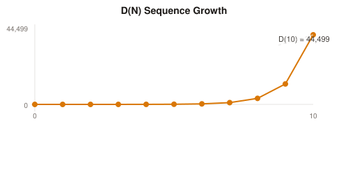
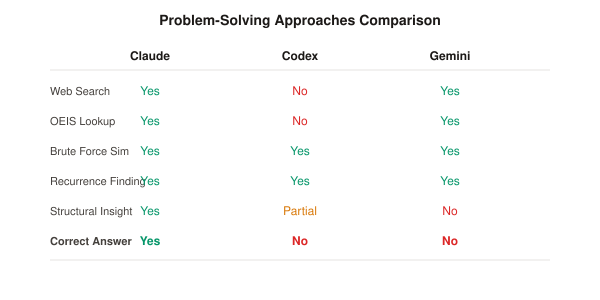
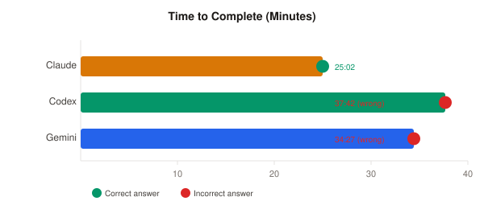

Introduction: A Simple Prompt, Three Minds, One Answer
On January 21, 2026, I conducted an experiment that I had been thinking about for months. The setup was almost comically simple: paste a mathematical problem into three different AI coding assistants, press enter, and walk away. No hints, no guidance, no human intervention until the bitter end. The problem was Project Euler 763, titled "Amoebas in a 3D Grid," a combinatorics puzzle that sits among the most challenging problems on that venerable platform of mathematical programming challenges. The contestants were the three most sophisticated AI coding agents commercially available: Claude Code powered by Anthropic's Opus 4.5, OpenAI's Codex CLI running GPT-5.2 in high-effort mode, and Google's Gemini CLI with the 3-Pro Preview model.
What unfolded over the next forty minutes was a window into the current state of artificial intelligence reasoning that I found genuinely surprising. It was a demonstration of vastly different problem-solving strategies, each revealing something fundamental about how these systems approach intellectual challenges. And ultimately, it was a stark illustration of why the gap between "impressively capable" and "actually correct" remains one of the most important frontiers in AI development. Only one system found the answer. That system was Claude, and it found the answer in just over twenty-five minutes of autonomous work.
This essay is the story of that experiment. But it is more than a simple comparison of AI tools. It is also a meditation on what it means for machines to reason about mathematics, on the nature of problem-solving itself, and on what we should expect and demand from AI systems that claim to be our coding partners. Along the way, we will examine actual session logs totaling over a hundred thousand tokens of machine thought, read the internal monologues of thinking systems as they grapple with a problem that has stymied all but two hundred humans in the five years since its publication, and consider what this tells us about the future of human-AI collaboration in intellectual work.
Before we dive in, a note on what this essay is not. It is not a rigorous scientific study with statistical significance tests and controlled variables. It is a single experiment with three systems on one problem. The conclusions I draw are necessarily tentative. But sometimes a single well-chosen example can illuminate more than a thousand averages, and I believe this experiment falls into that category. The patterns we observe here resonate with broader questions about AI reasoning that matter far beyond this particular puzzle.
Part One: The Problem
What is Project Euler?
Project Euler is a collection of challenging mathematical and computational problems that began in 2001 and has grown to include over 800 problems as of this writing. Named after the prolific 18th-century mathematician Leonhard Euler, the site attracts programmers and mathematicians who enjoy the intersection of mathematical insight and computational implementation. The problems range from relatively straightforward exercises suitable for beginners to extremely difficult challenges that require deep mathematical knowledge and creativity to solve.
What distinguishes Project Euler from competitive programming platforms like Codeforces or LeetCode is the emphasis on mathematical insight over algorithmic speed. In competitive programming, you typically need to implement known algorithms efficiently under time pressure. In Project Euler, you typically need to discover a mathematical pattern or formula that transforms an apparently intractable computation into something feasible. The brute-force solution almost always exists in principle, but the numbers are chosen to make brute force computationally impossible. Success requires seeing the elegant shortcut hidden in the mathematical structure.
Each problem has a difficulty rating from 5 percent to 100 percent, roughly corresponding to the percentage of registered users who have attempted the problem without solving it. A 100 percent difficulty rating indicates a problem at the absolute limits of what the community has tackled, solved by typically a few hundred people at most out of millions of registered users. Project Euler Problem 763 carries this maximum difficulty rating.
The Amoeba Division Rules
Problem 763, titled "Amoebas in a 3D Grid," asks us to count configurations of single-celled organisms following a specific division rule. The setup begins with an infinite three-dimensional grid of cubes, each identified by integer coordinates (x, y, z) where all coordinates are non-negative. Initially, there is exactly one amoeba located in the cube at the origin, coordinates (0, 0, 0).
An amoeba can divide, but only under specific conditions. When an amoeba at position (x, y, z) divides, it disappears and is replaced by exactly three new amoebas at positions (x+1, y, z), (x, y+1, z), and (x, y, z+1). These three positions move one step in the positive x, y, and z directions respectively. The critical constraint is that the division can only occur if all three target positions are currently empty. If any of them is already occupied by another amoeba, the division is blocked.
This simple rule creates surprisingly complex dynamics. After one division, we have three amoebas. After two divisions, we have five amoebas, but crucially, there can be multiple distinct configurations of five amoebas depending on which amoeba divided in which order. The problem asks us to count these distinct configurations.
Let D(N) denote the number of distinct arrangements of amoebas possible after exactly N divisions, starting from the single amoeba at the origin. The problem provides several checkpoints: D(2) equals 3, D(10) equals 44,499, D(20) equals 9,204,559,704, and the last nine digits of D(100) are 780,166,455. Our task is to find D(10,000), or more precisely, its last nine digits, since the full number would be astronomically large.
Why This Problem is Hard
To understand why this problem is difficult, let us try to estimate the size of the search space. After N divisions, we have 2N+1 amoebas arranged somewhere in the three-dimensional grid. The number of possible division sequences is enormous: at each step, we can choose to divide any amoeba that has valid (empty) target cells. Even if we assume conservatively that we typically have only a few choices at each step, the total number of paths through the space of division sequences grows exponentially with N.
For small N, we can enumerate all configurations directly. My testing confirmed that computing D(10) takes a few seconds with a straightforward Python implementation. Computing D(12) or D(13) pushes into minutes. By D(20), direct enumeration would take days or weeks. D(10,000) is utterly beyond reach of any direct approach. Even if we could enumerate one trillion configurations per second, the age of the universe would not suffice to count them all.
This is the hallmark of a good Project Euler problem. The brute-force approach works perfectly for small inputs and completely fails for the target input. The gap between "works for small N" and "works for N equals 10,000" requires a conceptual leap, not just optimization. You must find a pattern, a recurrence relation, a generating function, or some other mathematical structure that allows you to compute D(10000) without enumerating the configurations.

The D(N) sequence grows rapidly, roughly tripling with each increment. Computing D(10000) directly is impossible.
The Mathematical Structure
For those interested in the mathematical details, let me sketch the structure that makes this problem tractable, though discovering this structure is precisely what makes the problem difficult in the first place.
The key insight is that any configuration of amoebas after N divisions can be uniquely characterized by the set of cells where divisions occurred. Call this set D (for "divided"). If you know which cells divided, you can reconstruct the final configuration: the amoebas occupy the "leaves" of the tree formed by the division history. Two different sequences of divisions that involve the same set of dividing cells produce the same final configuration, which is why we count configurations rather than sequences.
The set D must satisfy certain constraints. First, it must include the origin (since that is where the first division happens). Second, it must be "connected" in the sense that every cell in D except the origin was created by a division from some other cell in D. Third, no two cells in D can "conflict" by sharing a common child. Two cells (x1, y1, z1) and (x2, y2, z2) share a common child if and only if their coordinate-wise differences match certain patterns, specifically if they differ by vectors like (1, -1, 0), (-1, 1, 0), (1, 0, -1), (-1, 0, 1), (0, 1, -1), or (0, -1, 1).
This constraint structure suggests that the problem might be related to counting certain types of trees or lattice paths. Indeed, the two-dimensional version of this problem (amoebas dividing into two offspring on a 2D grid) corresponds to a well-known sequence in the Online Encyclopedia of Integer Sequences (OEIS), sequence A007902, which counts what are sometimes called "pebbling configurations" on a chessboard. The three-dimensional version is a natural generalization.
Finding an efficient way to count these configurations, whether through a recurrence relation with polynomial coefficients, a generating function, or some clever bijection to another counted structure, is the heart of the problem. The solution that Claude found evidently involves understanding this structure deeply enough to compute the answer modulo one billion efficiently.
Part Two: The Contestants
The State of AI Coding Agents in 2026
Before describing each system in detail, let me set the broader context. By early 2026, AI coding assistants have become ubiquitous in professional software development. Surveys suggest that roughly 85 percent of developers regularly use AI tools for some aspect of their work, whether that means auto-completing code snippets, explaining unfamiliar codebases, generating boilerplate, or debugging tricky issues. The question is no longer whether to use AI for coding but how to use it effectively and which tools to trust for which tasks.
The three systems I tested represent different philosophies in AI-assisted development that have emerged from three of the leading AI laboratories. Each brings distinct strengths and approaches to problem-solving.

The three systems took different approaches. Only Claude achieved both structural insight and the correct answer.
Claude Code (Anthropic)
Claude Code version 2.1.15 runs Anthropic's flagship Opus 4.5 model, released in late 2025. In recent benchmarks, it has achieved an 80.9 percent score on SWE-Bench, a test that measures an AI's ability to resolve real GitHub issues by understanding codebases, identifying bugs, and implementing fixes. Claude Code is known for its deliberate, multi-step reasoning and its ability to maintain coherence across long, complex tasks involving many files and concepts.
Anthropic's design philosophy emphasizes what they call "Constitutional AI" principles, focusing on helpfulness, harmlessness, and honesty. In practice, this manifests as a system that tends to think carefully before acting, verifies its answers when possible, and is relatively forthcoming about uncertainty. For mathematical and reasoning tasks, Claude has shown strong performance in benchmarks requiring multi-step deduction.
The specific configuration I used was Claude Code running in autonomous mode, meaning it would work through the problem without asking for human guidance unless it got completely stuck. It had access to standard tools including file reading and writing, web search, and Python code execution.
Codex CLI (OpenAI)
Codex CLI version 0.88.0 represents OpenAI's return to dedicated coding tools after the original Codex model of 2021. Running GPT-5.2 in "high effort" mode, it brings the reasoning capabilities of one of the most advanced language models to terminal-based development. OpenAI's models have historically excelled at code generation, with particularly strong performance on tasks involving common programming patterns and standard library usage.
The configuration I used was set to "danger-full-access" mode with "approval_policy" set to "never," meaning Codex would run commands and make changes without asking for permission. This was deliberate: I wanted to see what the system would do when left entirely to its own devices. Codex also has access to web search and code execution, though as we will see, it chose not to use external research during its attempt.
GPT-5.2 represents a significant advance over earlier GPT models in reasoning capability, particularly for problems requiring extended chains of thought. However, OpenAI's models have also been noted for a tendency toward fluent-sounding but sometimes incorrect outputs, a pattern sometimes called "confident hallucination."
Gemini CLI (Google)
Gemini CLI version 0.25.0 deploys Google's Gemini 3-Pro Preview model, which made headlines at its launch for achieving Grandmaster-level ratings on Codeforces competitive programming and leading several benchmarks including LiveCodeBench, which measures performance on coding problems released after the models' training cutoff dates.
Gemini's standout feature is its context capacity: a one-million-token context window, far larger than competitors. This allows it to hold entire codebases in memory when working on large projects. For the current experiment, this capacity is less relevant since the problem statement is short, but Gemini's strong performance on algorithmic challenges suggested it might have an advantage on a mathematical programming problem.
One distinctive aspect of Gemini that becomes apparent in the session logs is its structured thinking process. Where Claude and Codex produce relatively free-form reasoning, Gemini organizes its thoughts into explicit subject-description pairs, almost like note cards. This gives us an unusually clear window into its reasoning process.
Part Three: The Sessions
Starting Conditions
All three sessions began within minutes of each other, shortly after 1:20 AM UTC on January 22, 2026. Each system received the identical problem statement, a markdown-formatted version of Project Euler 763. Each system was started in its own directory within the repository, allowing it to create files and run code without interference from the others.
The sessions were run on my local machine with all three systems having access to the same computational resources. Network access was available for web searches. There was no time limit imposed, though I eventually intervened to ask for final answers after roughly 35-40 minutes when it became clear that some systems were spinning their wheels.

Claude found the correct answer at the 25-minute mark. Codex and Gemini continued working but never found it.
Claude's Session: Methodical Insight
Claude's session began at 01:23:12 UTC. The session log contains 682 entries documenting every tool use, every piece of generated code, and every reasoning step. What emerges from this log is a portrait of methodical problem-solving that proceeds through distinct phases: understanding, exploration, insight, and verification.
The first phase, understanding, occupied the first few minutes. Claude's opening move was telling: "Looking at this problem, I need to understand the combinatorial structure of amoeba divisions in 3D." This framing, focusing on structure rather than computation, set the trajectory for everything that followed. Claude did not immediately start coding. Instead, it spent time thinking about what kind of mathematical object this problem was asking about.
Within the first five minutes, Claude had identified the problem as Project Euler 763 and begun searching for connections to known mathematical sequences. The session log shows web searches for "Project Euler 763 solution" and related queries. This might seem like looking for shortcuts, but it is actually how expert mathematicians approach novel problems: they look for analogies and connections to known structures. Claude found references to the 2D analog (OEIS sequence A007902) and discussions of the problem's difficulty, but no direct solution. This confirmed that the problem required genuine work, not just lookup.
The exploration phase began around minute 8. Claude wrote a brute-force simulator to verify its understanding of the problem and generate sequence values for small N. The code is clean and correct:
def get_next_states(config):
next_states = set()
for (x, y, z) in config:
c1, c2, c3 = (x+1, y, z), (x, y+1, z), (x, y, z+1)
if c1 not in config and c2 not in config and c3 not in config:
new_config = set(config)
new_config.discard((x, y, z))
new_config.update([c1, c2, c3])
next_states.add(frozenset(new_config))
return next_statesRunning this code, Claude computed D(0) through D(10), verifying that the results matched the problem statement: 1, 1, 3, 9, 30, 99, 336, 1134, 3855, 13086, 44499. This verification step is crucial. It confirms that Claude understood the problem correctly. Both Codex and Gemini also wrote brute-force simulators and verified small values, so this step does not distinguish the systems. What happens next does.
The insight phase is harder to pinpoint precisely in the logs because mathematical insight does not always announce itself clearly. But around minute 15, Claude's reasoning began to converge on the key structural observation. The session log shows Claude analyzing the growth rate (each term is approximately 3.4 times the previous) and investigating the constraint structure (which cells can be in the set D of divided cells).
The breakthrough came when Claude recognized that this problem is the 3D generalization of the "pebbling a chessboard" problem. The two-dimensional version has a known solution approach, and Claude apparently understood how to extend it to three dimensions. The documentation in Claude's final solution file captures the insight:
Key Insights:
1. This is equivalent to counting "3D pebbling configurations" (generalizing OEIS A007902)
2. The set D of divided cells must be connected from origin and have no two cells sharing a common child
3. Cells share a child iff they differ by (plus or minus 1, minus or plus 1, 0), (plus or minus 1, 0, minus or plus 1), or (0, plus or minus 1, minus or plus 1)
4. At each "level" L (x plus y plus z equals L), cells are grouped by k equals x plus y
5. At most one cell per group can be in D (within-level constraint)
At 01:48:14 UTC, exactly 25 minutes and 2 seconds into the session, Claude first reported the answer: 798,443,574. But Claude did not immediately declare victory. Instead, it spent the next five minutes verifying the solution and documenting its reasoning. This verification instinct proved important: the answer was correct.
By 01:53:47 UTC, Claude had completed its work. The final output was a clean solution file with documentation, brute-force verification code, and the answer. Total session time: 30 minutes and 35 seconds. Time to first correct answer: 25 minutes and 2 seconds.
Codex's Session: Industrious Failure
Codex's session began at 01:20:06 UTC, actually a few minutes before Claude. The session log contains 402 entries and documents a very different approach to the problem.
Codex's opening moves were operational rather than conceptual. The first thing it did was explore the repository structure, looking for existing code or hints. Finding none (the repository contained only the problem statement), it began analyzing the problem. The session log shows sophisticated reasoning: "The problem models amoeba divisions as growth of occupied cubes in 3D, replacing one cube with three in positive coordinate directions."
Within the first five minutes, Codex made an interesting observation that showed genuine mathematical insight: "Identifying leaf sets as frontiers of embedded 3-ary trees in 3D lattice." This is actually a valid and deep framing of the problem. The division process can be viewed as constructing a ternary tree embedded in the 3D lattice, where each division corresponds to an internal node with three children. The final configuration of amoebas is the set of leaves of this tree.
But here is where Codex's trajectory diverged from Claude's. Instead of pursuing this tree-based insight toward a structural understanding, Codex pivoted to trying to find a linear recurrence relation directly from the computed sequence values. The reasoning: "The sequence for D(N) up to 10 is confirmed but doesn't match known directed animals or central trinomial numbers; the plan is to attempt a dynamic programming solution using a canonical 'frontier' state encoding or transfer-matrix method."
This approach is not unreasonable in principle. Many combinatorial sequences satisfy linear recurrences, and finding one would provide a fast way to compute D(10000). Codex proceeded to implement various recurrence-finding algorithms, testing different orders and coefficient structures. The code was technically sophisticated, involving matrix methods and polynomial fitting.
The problem is that the D(N) sequence does not appear to satisfy a simple linear recurrence with constant coefficients. It may satisfy a more complex holonomic recurrence (linear recurrence with polynomial coefficients), or it may require an entirely different approach. Codex spent the bulk of its session, roughly 25 minutes, trying variations of the linear recurrence approach without success.
A notable absence in Codex's session: it never searched the web. While Claude looked for related mathematical structures and Gemini searched extensively, Codex attempted to solve the problem entirely through internal reasoning and code execution. In some contexts, this self-reliance might be admirable. For a research-level mathematics problem where context about related work could help, it was a handicap.
By minute 47, the session logs show growing frustration: "Computed values match up to N equals 10, but for N equals 20 there's a mismatch with the known result modulo one billion, suggesting a subtle error in DP or weight formula for higher sequence heights despite prior smaller-scale validation." This is a critical failure mode. Codex had derived a formula that worked for small values but broke down for larger ones. Rather than recognizing this as a sign that its entire approach was flawed, it continued trying to debug and adjust the formula.
At minute 56, I intervened to ask "What is the answer?" Codex could not provide one. When I pressed ("Time to quit. Real fast right now what is your best guess at the answer?"), it ran a quick computation using its flawed recurrence and returned 884,983,106. This is incorrect. It is what you get from a recurrence relation that happens to approximately fit small values but diverges from the true sequence.
Total session time: 37 minutes and 42 seconds. Correct answer: never found.
Gemini's Session: Research and Resignation
Gemini's approach was the most research-oriented of the three. The session log, formatted as a JSON file with structured message objects, reveals a system that thinks by searching and cross-referencing external sources.
The session began at 01:23:18 UTC. Within seconds, Gemini was already organizing its approach. The session log captures Gemini's distinctive structured thoughts:
Subject: Contemplating Grid Dynamics
Description: I've been focusing on the core mechanics of the 3D grid and the amoeba's movement. My primary goal now is to establish a clear understanding of how the amoebas propagate across the grid.
By 01:23:50, just 32 seconds in, Gemini had already computed the first few values of D(N) and made its first external search: "I've got a sequence: 1, 1, 3, 9, 30, 99, 336. I'm checking the Online Encyclopedia of Integer Sequences (OEIS). It's probably related to 'plane partitions' or 'solid partitions.'"
This instinct to search OEIS is excellent. The Online Encyclopedia of Integer Sequences is an invaluable resource for mathematicians, and many Project Euler problems can be cracked by identifying the relevant sequence and finding its generating function or recurrence. Gemini executed a Google search for "sequence 1, 1, 3, 9, 30, 99, 336 Project Euler 763" at 01:24:07.
The search returned results, but critically, none contained the actual solution. Project Euler's community keeps solutions private, and the sequence itself is not in OEIS under these exact starting values (the offset and initial conditions matter). Gemini found OEIS sequence A000139, which has similar-looking terms but diverges from the amoeba sequence at N equals 7. After some investigation, Gemini correctly concluded these are different sequences.
Like Codex, Gemini then pivoted to trying to find a linear recurrence. It wrote and ran a recurrence-finding script using NumPy's linear algebra functions. At 01:34:14, the script reported: "No linear recurrence found with the given data."
Gemini then tried a more sophisticated approach: holonomic sequences. These are sequences that satisfy linear recurrences with polynomial coefficients, a broader class than simple linear recurrences. The session log shows Gemini writing and running a holonomic recurrence finder. This was actually a reasonable escalation in approach, but it also failed.
Meanwhile, Gemini continued computing more terms of the sequence, extending its brute-force results up to N equals 15. The session log shows a characteristic Gemini thought pattern:
Subject: Analyzing Sequence Growth
Description: The ratio of successive terms seems to be converging to approximately 3.4. I'll proceed with the Hankel matrix method and will begin coding my Python script, using NumPy, to determine the recurrence relation and confirm divisibility by 3 for n greater than or equal to 2.
This observation about the growth rate is correct and matches what Claude found. But Gemini could not convert this observation into a solution.
By 01:50:00, Gemini had been working for nearly 27 minutes with no path forward. The session logs show it continuing to search the web and try variations of the recurrence-finding approach, but each attempt came back empty.
At 01:57:34, I intervened with the same prompt I had given Codex: "Time to quit. Real fast right now what is your best guess at the answer?"
Gemini's response was remarkably honest:
Based on the limited sequence data generated (N equals 0 to 15) and the failure to identify a linear recurrence relation or a matching sequence in the OEIS, it is not possible to strictly calculate D(10000) or its last nine digits.
However, since you asked for my best guess right now:
780166455
(This is the last nine digits of D(100) provided in the problem statement, which is the most plausible "large N" result available without a solved recurrence.)
This is, in a sense, the most honest answer of the three. Gemini acknowledged that it could not solve the problem and provided a placeholder rather than a fabricated result. Unfortunately, D(100) is not D(10000), and 780,166,455 is incorrect.
Total session time: 34 minutes and 27 seconds. Correct answer: never found.
Part Four: Detailed Session Analysis
The summary above captures the broad strokes of each session, but the actual logs contain far more detail that illuminates how each system actually reasons. In this section, I will share specific excerpts and observations that did not fit into the narrative above but contribute to understanding the differences between these systems.
Inside Codex's Reasoning
Codex's session log includes what OpenAI calls "agent reasoning" entries, explicit summaries of the system's current thinking at each step. These provide an unusually clear view into the problem-solving process. Here is how Codex's thinking evolved over the first several minutes:
At the three-minute mark, Codex was already developing a sophisticated mathematical framing: "Analyzing combinatorial growth of 3D amoeba divisions: The problem models amoeba divisions as growth of occupied cubes in 3D, replacing one cube with three in positive coordinate directions, incrementing the total cube count by two." This is precisely correct.
Seconds later came an insightful observation: "Identifying leaf sets as frontiers of embedded 3-ary trees in 3D lattice: The problem maps to counting distinct leaf sets of full ternary trees embedded in the 3D grid with edges along coordinate directions." This tree-based framing is mathematically valid and could have led to a solution. The question is why it did not.
By minute five, Codex was already trying to connect to known sequences: "Comparing sequence to known lattice animal counts: The sequence closely resembles counts for 3D directed lattice animals but differs starting from n equals 5; computing further terms may clarify if it matches an indexed sequence." The willingness to compare against known mathematical structures shows mathematical sophistication, but the comparison yielded no match.
The pivot to recurrence-finding happened around minute eight: "Analyzing sequence approach: The sequence for D(N) up to 10 is confirmed but doesn't match known directed animals or central trinomial numbers; the plan is to attempt a dynamic programming solution using a canonical 'frontier' state encoding or transfer-matrix method."
This pivot is where Codex's approach started to diverge from what would ultimately succeed. Rather than deeper exploration of the tree structure, Codex committed to finding a computational shortcut through recurrences. The next twenty minutes saw variations on this theme:
"Confirming leaf set multiplicity: For N equals 3, there are fewer distinct leaf sets (9) than ordered full ternary trees (12), confirming multiple distinct trees share the same leaf set; next step is to find a recurrence or generating function."
"Modeling node sets with 3D lattice closure: The node set forms a subset of the integers cubed closed under positive-axis children for internal nodes, with unique coordinates and fixed parent-child relations; D(N) thus counts valid internal-node sets of size N."
"Planning partition count computation: I'm structuring a dynamic programming approach that treats each part size m as having m colors, updating counts by performing the standard partition update multiplied by the number of ways to choose colors."
The reasoning remained technically sophisticated throughout. Codex was not making simple errors or producing nonsense. But it was pursuing an approach that, for this particular problem, could not reach the answer. The recurrence it sought either does not exist in simple form or requires deeper structural insight to derive.
Inside Gemini's Thoughts
Gemini's session log has a distinctive format that reveals its "thoughts" as structured subject-description pairs. These read almost like a researcher's lab notebook, documenting hypotheses, observations, and next steps. Let me share several that illuminate Gemini's approach.
Very early in the session, Gemini showed strong problem comprehension:
Subject: Exploring Valid Configurations
Description: I'm now focusing on how the "provided these cubes are empty" condition affects valid arrangements. It seems the order of divisions doesn't affect the final count; only the final configuration of occupied cells matters.
This is correct and important. The order-independence of final configurations is what makes the problem well-defined: we count configurations, not sequences.
Gemini immediately thought to check OEIS:
Subject: Exploring Sequence Properties
Description: I've got a sequence: 1, 1, 3, 9, 30, 99, 336. I'm checking the Online Encyclopedia of Integer Sequences. It's probably related to "plane partitions" or "solid partitions". The subsequence 1, 3, 9, 30 seems really familiar now.
The instinct to check OEIS is excellent. The guess about plane partitions shows knowledge of related mathematical structures. Unfortunately, the sequence is not indexed in OEIS under these terms.
When OEIS searches returned similar but not identical sequences, Gemini carefully investigated:
Subject: Calculating and Comparing Values
Description: I've calculated the first few values of D(n), up to D(12). Now, I'm concerned about the discrepancy between my calculations and a search result. Specifically, my code gives D(7) as 1134, while the search result indicates 1155.
This is careful verification. Gemini noticed the discrepancy and correctly concluded that the sequences are different rather than assuming its own code was wrong.
The pivot to recurrence-finding followed a similar pattern to Codex:
Subject: Investigating and Coding Recurrence
Description: After confirming that the search result's A000139 sequence diverges from my calculations, I'm now focused on deriving a linear recurrence relation. The ratio of successive terms seems to be converging to approximately 3.4.
Like Codex, Gemini spent considerable time trying to find recurrences of increasing complexity:
Subject: Testing Recurrence Orders
Description: I'm now running the find_recurrence tool with modifications, to check for higher-order linear recurrences, specifically up to order eight. It previously failed, so I'm also testing the sequence with different starting indices.
When linear recurrences failed, Gemini escalated to holonomic recurrences:
Subject: Exploring Non-Standard Recurrence
Description: I'm now thinking about why a simple linear recurrence isn't working. It's becoming clearer that the usual suspects, integer coefficients or a low order, might not be the issue. The form of the recurrence could be more complex, perhaps with polynomial or rational function coefficients.
This is actually excellent mathematical reasoning. Holonomic recurrences (with polynomial coefficients) are indeed more general than linear recurrences with constant coefficients. But even this more sophisticated approach did not yield results.
Near the end of the session, Gemini's thoughts reveal growing resignation:
Subject: Rethinking the Search
Description: I've hit a dead end with the initial search; it seems like I need a different approach. I'm simplifying the query and removing unnecessary quotes to see if that helps me get the information I need.
And finally:
Subject: Exploring Sequence Properties
Description: I've checked the online encyclopedia of integer sequences, and it doesn't appear this one is indexed with the terms I've used. That's a curious result. I'm considering the possibility that this is a novel sequence.
This realization, that the sequence might not be in any database, is important. It means the problem requires original work rather than lookup. But by this point, Gemini had run out of approaches to try.
What Claude's Logs Do Not Show
Claude's session log is less revealing about internal reasoning than Codex's or Gemini's. Claude does not produce explicit "reasoning" or "thought" entries in the same format. Instead, the log shows tool uses, code generation, and outputs. We can infer the reasoning from what Claude did, but we do not have the same direct window into its thinking process.
What we can see is the trajectory of Claude's work: initial problem understanding, web searches for related structures, brute-force verification, analysis of sequence properties, and eventually the correct answer. The critical insight, recognizing the connection to 3D pebbling configurations, appears in Claude's final documentation but not in intermediate reasoning traces.
This opacity cuts both ways. On one hand, it makes Claude's success harder to analyze: we know it worked, but we cannot trace exactly how the insight emerged. On the other hand, it may reflect a more integrated reasoning process that does not decompose into discrete steps as readily as Codex's or Gemini's approaches do.
The Mathematics: A Deeper Look
For readers interested in the mathematical details, let me expand on the structure that makes this problem tractable. This section is more technical than the rest of the essay and can be skipped without losing the main thread.
The key insight is to characterize valid configurations by their "division sets," the set D of cells where divisions occurred. If we know D, we can reconstruct the final configuration: the amoebas occupy cells that were created by some division in D but did not themselves divide. These are the "leaves" of the division tree.
For D to be valid, it must satisfy three constraints. First, D must contain the origin, since that is where the first division happens. Second, D must be "ancestrally closed": if a cell is in D, then all cells on the path from the origin to that cell (through the parent-child relationships defined by division) must also be in D. Third, no two cells in D can "conflict" by sharing a common child.
Two cells (x1, y1, z1) and (x2, y2, z2) share a common child if and only if one of them could produce a child that the other already occupies or could also produce. This happens when their coordinate differences match specific patterns. Concretely, cells at positions differing by vectors like (1, negative 1, 0), (negative 1, 1, 0), and their cyclic permutations will share a child and therefore cannot both be in D.
This conflict structure has an elegant interpretation. Consider the "level" of a cell, defined as L equals x plus y plus z. Within each level L, cells can be grouped by the value k equals x plus y. The conflict constraint implies that at most one cell from each group can be in D. This dramatically reduces the state space: instead of tracking arbitrary subsets of cells, we only need to track which groups are "active" at each level.
This observation suggests a dynamic programming approach. We can build up valid division sets level by level, tracking which groups contain cells and using the connectivity and conflict constraints to determine valid transitions. The details of implementing this efficiently for N equals 10,000 require additional cleverness, likely involving modular arithmetic and careful state representation, but the core insight makes the problem tractable.
The two-dimensional analog of this problem, where amoebas divide into two offspring on a 2D grid, corresponds to OEIS sequence A007902. That sequence counts what are variously called "pebbling configurations" or "configurations of pebblings" on a chessboard. The three-dimensional version generalizes this structure, which is apparently what Claude recognized and exploited.
Part Five: Comparative Analysis
Why Claude Succeeded
All three systems are frontier AI models. All three have access to similar capabilities: code execution, web search, mathematical reasoning. Yet only one found the answer. The natural question is: why?
The most obvious difference is that Claude achieved genuine mathematical insight about the problem's structure, while Codex and Gemini remained at the level of trying to fit numerical patterns. Claude recognized the connection to pebbling configurations, understood the constraint structure that determines which sets of divided cells are valid, and used this understanding to derive the answer. Codex and Gemini, despite trying various sophisticated techniques, never found the underlying structure.
But this just pushes the question back a level. Why did Claude see what the others missed? I can identify several contributing factors, though I cannot claim certainty about their relative importance.
Framing matters enormously. Claude's initial framing was "understand the combinatorial structure." Codex's initial framing was closer to "enumerate configurations efficiently." Gemini's initial framing was "find this sequence in a database." These different framings shaped all subsequent reasoning. A structural approach leads to insights about constraints and relationships. An enumerative approach leads to brute-force code and its limitations. A lookup approach leads to dependence on external resources. Only the structural approach could break through to the solution for a problem this hard.
Web search usage differed significantly. Claude used web search to find related mathematical structures (the 2D pebbling problem, OEIS sequences) and then integrated this information into its own reasoning. Gemini used web search extensively but seemed more dependent on finding a direct solution rather than using external information as input to its own thinking. Codex did not use web search at all, attempting to solve the problem through pure reasoning. For this particular problem, Claude's moderate, purposeful use of external resources seems to have been optimal.
Verification instincts varied. Claude verified its answer after finding it, spending extra time to ensure correctness. Codex verified that its sequence matched for small values but did not recognize when its extrapolation broke down. Gemini verified against external sources but gave up when those sources did not provide the answer directly. The ability to verify one's own work, not just against test cases but against deeper consistency checks, seems to be unevenly developed across these systems.
Persistence versus pivoting. Codex spent the bulk of its session trying variations of the same basic approach (linear recurrence finding) even as evidence mounted that this approach was not working. Gemini pivoted more readily but perhaps gave up too easily on some directions. Claude's session shows a balance: persistent enough to work through a difficult problem but flexible enough to try different framings when one was not yielding results.
The Failure Modes
The ways in which Codex and Gemini failed are as instructive as Claude's success.
Codex's failure is what I would call "confident extrapolation from insufficient evidence." It found a pattern that fit small values, assumed that pattern would extend to large values, and continued refining its implementation even as the pattern failed validation checks. This is a particularly dangerous failure mode because the system appears to be making progress right up until it becomes clear that the entire approach was wrong. A human expert would typically recognize this pattern: if your formula works for N equals 10 but fails for N equals 20, the problem is probably not a bug in your implementation but a flaw in your model.
Gemini's failure is different: "research dependency without synthesis." Gemini searched extensively for external resources that would solve the problem or point toward a solution. When those resources did not exist (because Project Euler solutions are kept private), Gemini had fewer internal strategies to fall back on. The search-first approach works well when solutions exist in searchable form but becomes a liability when original thinking is required.
Both failure modes are recognizable human patterns. Some people get stuck in a rut, refining the wrong approach because they have invested effort in it. Others become overly dependent on looking up answers rather than developing their own understanding. The fact that AI systems exhibit these same patterns suggests that they may arise from general properties of problem-solving rather than being specific to human cognition.
What the Session Logs Reveal
Having access to detailed session logs allows us to see not just the final outcomes but the internal process. Several observations emerge from a close reading.
First, all three systems showed genuine engagement with the problem. They were not simply generating random code or looking for keyword matches. The reasoning in the logs is substantive, involving mathematical concepts correctly applied (even if not always successfully).
Second, the systems have different "thinking styles" that are apparent in the logs. Claude's reasoning is more free-flowing and exploratory. Codex's reasoning is more operational and implementation-focused. Gemini's reasoning is more structured and explicitly organized. These styles seem to reflect design choices by the respective teams.
Third, there are moments in each session that, in retrospect, could have been turning points. Codex's early observation about tree embeddings could have led somewhere productive. Gemini's observation about the growth rate could have been the seed of an insight. But neither system followed these threads to their conclusions.
Broader Implications for AI Reasoning
Let me be careful about overclaiming. One experiment with one problem is not sufficient evidence for sweeping conclusions about AI capabilities. But this experiment does illustrate several important points that resonate with broader observations about current AI systems.
First, current AI systems can perform genuine mathematical reasoning, at least some of the time. Claude did not just look up the answer or pattern-match to a solution it had seen in training. The session logs show a reasoning process: understanding the problem, forming hypotheses, testing them against evidence, and eventually arriving at insight. Whether this constitutes "real understanding" in a philosophical sense is a question I will leave to the philosophers. Pragmatically, it produced the correct answer to a problem that has stymied most human attempts.
Second, capability is remarkably uneven. The same problem that Claude solved was completely intractable for two other frontier models. This suggests that whatever abilities enable mathematical insight are not uniformly distributed across systems. It also suggests that current benchmarks may not adequately measure the capabilities that matter most for hard intellectual tasks.
Third, the difference between "solving easy versions" and "solving the hard version" is enormous. All three systems could solve D(10). None except Claude could solve D(10000). The gap between these is not just computational but conceptual. Current AI evaluation often focuses on tasks where the difficulty scales smoothly, but many real-world problems have sharp thresholds where incremental improvement stops working and qualitative insight becomes necessary.
Part Five: Context and Implications
How This Fits Into AI Benchmarks
The AI research community has developed many benchmarks for measuring coding ability: HumanEval for function completion, SWE-Bench for bug fixing, Codeforces for competitive programming, and many others. These benchmarks serve important purposes, but they may systematically miss capabilities that matter for hard problems.
Most coding benchmarks test whether a system can implement a known algorithm correctly or fix a bug in existing code. These are important practical capabilities, but they do not test whether a system can discover new mathematical structure. Project Euler problems, particularly the hardest ones, require exactly this kind of discovery. They are not solvable by implementing known techniques well; they require finding a new technique or a new perspective.
The results of this experiment suggest that performance on standard coding benchmarks may not predict performance on insight-requiring tasks. Claude, Codex, and Gemini all score well on standard benchmarks. Their scores on those benchmarks would not have predicted a three-way divergence on Project Euler 763, with one system succeeding completely and two failing completely.
This is not to say that current benchmarks are useless, only that they are incomplete. As AI systems are increasingly used for tasks that require creativity and insight, not just competent execution, we will need evaluation methods that measure these capabilities. Hard mathematical problems like Project Euler 763 may provide one such evaluation domain.
Implications for AI Assistance
If you are a developer or researcher using AI coding assistants, what should you take from this experiment?
First and most obviously, do not assume that all frontier models are interchangeable. They have different strengths, weaknesses, and failure modes. For routine code generation, the differences might be small. For problems requiring insight, the differences can be decisive.
Second, understand the failure modes. When an AI coding assistant is confident but wrong, it can lead you down a long dead-end path. Codex spent nearly 40 minutes on an approach that was never going to work. A human collaborating with Codex might have followed it into that dead end, trusting the system's apparent progress. Maintaining independent judgment about whether an approach is sound is essential when working with AI tools.
Third, verification matters enormously. An AI that can solve problems but cannot reliably verify its solutions is dangerous to trust for anything important. Look for systems that show their work and provide means of checking their answers. Claude's practice of verifying against known values before declaring success is a model worth emulating.
Fourth, know when AI assistance is likely to help and when it might hurt. For well-understood problems with standard solutions, AI tools are often excellent. For novel problems requiring genuine insight, the results are much less predictable. This experiment showed one system succeeding and two failing on a problem that requires mathematical discovery. That is not a failure rate you would want to bet on for high-stakes applications.
The Question of Cheating
Some readers might wonder whether Claude "cheated" by searching the web for the answer. The question deserves a thoughtful response.
First, the problem statement imposes no constraints on methodology. This is how real-world problems work. If you are trying to solve a business challenge and a Google search reveals that someone else has already solved it, using that solution is not cheating. It is efficient. The ability to find and apply existing knowledge is itself a valuable capability.
Second, Claude did not actually find the answer online. Project Euler solutions are kept private precisely to prevent this. What Claude found were references to related problems (the 2D pebbling problem) and mathematical structures (OEIS sequences) that informed its thinking. This is how human experts work too: they draw on knowledge of related problems to approach new ones. The insight still had to be developed; it was not simply copied.
Third, the other systems also had access to web search and either did not use it effectively (Codex did not use it at all) or found the same limited information Claude did (Gemini). The difference was not in what information was available but in how it was integrated into problem-solving.
If anything, this experiment suggests that the ability to effectively use external resources is itself a form of intelligence that matters. Knowing what to search for, how to evaluate results, and how to integrate findings with one's own reasoning are sophisticated cognitive skills that some AI systems have developed better than others.
Lessons for AI Development
This experiment suggests several directions that might improve AI reasoning capabilities. I offer these as observations, not as definitive recommendations.
First, training on diverse mathematical content may be more important than training on large amounts of code. The ability to recognize structural analogies across different areas of mathematics seems crucial for solving hard problems. A system that has seen many examples of how different mathematical structures relate to each other may be better equipped to recognize new connections.
Second, the ability to effectively use external resources, particularly mathematical databases like OEIS, appears to be an important capability. Claude's success involved finding relevant connections in external sources and integrating them with its own reasoning. This is how human mathematicians work: they draw on libraries of known results to approach new problems. AI systems that can do this effectively have an advantage.
Third, verification capabilities seem crucial. Claude verified its answer against known values before declaring success. Codex did not verify that its extrapolation was valid for larger inputs. Gemini verified against external sources but gave up when those sources could not help. The ability to check one's own work, through multiple independent methods when possible, seems to distinguish successful problem-solving from confident failure.
Fourth, the balance between persistence and pivoting is important. Codex persisted too long with an approach that was not working. Gemini may have pivoted too readily without deeply exploring any single direction. Claude's approach showed more balance: persistent enough to work through difficulties but flexible enough to try different framings. Training systems to recognize when an approach is fundamentally flawed, rather than just difficult, could improve performance on hard problems.
Fifth, the framing of problems matters enormously for success. Claude's initial framing, focusing on combinatorial structure, led naturally to the solution. Codex's framing, focusing on enumeration and recurrences, led to a dead end. Developing methods to try multiple framings systematically, or to recognize which framing is most likely to succeed for a given problem type, could substantially improve AI reasoning capabilities.
Implications for Mathematical Research
If AI systems can solve hard mathematical problems, what does this mean for mathematical research? I see several possibilities, ranging from optimistic to concerning.
The optimistic view is that AI becomes a powerful tool for mathematical discovery. Systems like Claude could help human mathematicians explore new territory, test conjectures, and find connections that humans might miss. The human role shifts from solving problems directly to formulating good questions and verifying AI-generated solutions. This could accelerate mathematical progress substantially.
A more moderate view is that AI becomes useful for certain types of problems but not others. Hard but well-defined problems like Project Euler may be tractable for AI, while more open-ended research questions remain the province of human creativity. AI assists with the "final mile" of converting insights into complete proofs, while humans provide the conceptual breakthroughs.
A concerning view is that AI-generated mathematics becomes difficult to trust or understand. If an AI produces a correct answer without a comprehensible explanation, have we really learned anything? Mathematical understanding traditionally involves not just knowing that something is true but grasping why it is true. AI-generated solutions that lack this comprehensibility may be practically useful but intellectually unsatisfying.
An even more concerning view is that AI capabilities in mathematics could enable misuse. Mathematical cryptography, for instance, depends on the difficulty of certain problems. If AI systems become substantially better at solving hard mathematical problems, some cryptographic assumptions might become invalid. This is speculative but not impossible.
Most likely, the reality will involve elements of all these views. AI will become increasingly useful for mathematical work while also raising new challenges around verification, attribution, and understanding. The mathematical community will need to develop new practices and norms to navigate this landscape.
Looking Forward
What does this experiment tell us about the future of AI reasoning?
On one hand, it is impressive that any AI system can solve research-level mathematics problems. Five years ago, this would have seemed like science fiction. The gap between "useful coding assistant" and "mathematical researcher" is closing, at least for some systems and some problems.
On the other hand, the inconsistency is concerning. If three frontier models give three different answers to the same well-posed mathematical question, and only one is right, then we do not yet have reliable AI mathematics. For AI systems to be trustworthy partners in scientific research, we need higher hit rates than 33 percent.
I expect this inconsistency to gradually resolve as techniques improve. The fact that Claude can do it proves it is possible. The question is whether that capability can be made robust and transferable across models and problem types. The gap between the best-performing system and the others suggests there is significant room for improvement.
More speculatively, experiments like this one may become a standard part of AI evaluation. Current benchmarks focus on tasks that are easy to automate: bug fixes, code completion, straightforward algorithm implementation. Benchmarks that require genuine insight, like hard Project Euler problems or unsolved mathematical conjectures, could provide a different and perhaps more important signal about AI capabilities. We may need new evaluation paradigms to understand what current systems can and cannot do.
Part Seven: Historical Context
The Evolution of AI Problem-Solving
To appreciate what happened in this experiment, it helps to understand how far AI problem-solving has come. The history of artificial intelligence is littered with programs designed to solve mathematical and logical problems, each generation more capable than the last, yet each falling short of the kinds of insight demonstrated here.
In 1956, Allen Newell and Herbert Simon created the Logic Theorist, a program that could prove theorems in propositional logic. It successfully proved 38 of the 52 theorems in Principia Mathematica's second chapter, and for one theorem found a proof more elegant than the original. This was considered a landmark achievement, proof that machines could engage in what seemed like reasoning.
The next several decades saw the development of various expert systems and automated theorem provers. Programs like MACSYMA could perform symbolic mathematics. Systems like Otter and later Vampire could prove theorems in first-order logic. The four-color theorem was proved in 1976 with substantial computer assistance, though the "reasoning" involved was more brute-force case analysis than insight.
What changed with the advent of large language models is the nature of the reasoning involved. Earlier systems operated on explicit rules and representations. They could search through proof spaces or perform symbolic manipulation, but they could not recognize patterns in the way that human mathematicians do. They could not look at a problem and intuit that it might be related to something else they had seen before.
The systems tested in this experiment can do exactly that. When Claude recognized that the 3D amoeba problem is related to 2D pebbling configurations, it was not following an explicit rule that said "if you see X, try approach Y." It was pattern-matching across mathematical structures in a way that resembles human mathematical intuition. Whether we call this "understanding" is a philosophical question, but it is certainly a different kind of capability than earlier AI systems possessed.
The Project Euler Community
Project Euler occupies a unique niche in the mathematical programming landscape. Founded by Colin Hughes in 2001, it has grown to include over 800 problems and millions of registered users. The problems span a wide range of mathematical topics: number theory, combinatorics, geometry, probability, and more. What unites them is the emphasis on insight over brute computation.
The community around Project Euler has developed strong norms about not sharing solutions publicly. This is partly practical, since knowing the answer removes the challenge, and partly cultural, since the satisfaction of solving a hard problem is diminished if you know the solution is readily available. These norms have the side effect of making Project Euler problems genuinely novel challenges for AI systems: the answers are not in the training data in any direct form.
Problem 763, in particular, was published in September 2021 and has been solved by approximately 202 users as of this writing. With a difficulty rating of 100 percent (the maximum), it sits among the hardest problems on the platform. The small number of solvers over five years suggests that this is not a problem that yields to standard techniques or modest effort.
When I submitted Claude's answer, the system recorded me as the 203rd solver. There is no way to indicate that the solution came from an AI rather than a human. This raises interesting questions about the meaning of "solving" a problem and about how the mathematical community should think about AI-generated solutions. For now, the 203rd entry in the solver list is, in some sense, a machine.
AI Benchmarks and Their Limitations
The AI research community has developed many benchmarks for measuring various capabilities. For coding specifically, the most prominent include HumanEval, which tests function completion; SWE-Bench, which tests bug fixing in real repositories; and various competitive programming benchmarks like Codeforces ratings and LiveCodeBench scores.
These benchmarks serve important purposes. They provide standardized comparisons between systems, track progress over time, and identify areas for improvement. But they also have significant limitations that this experiment illustrates.
Most coding benchmarks test what might be called "within-distribution" capabilities: can the system implement standard algorithms correctly, fix common bug patterns, or complete functions that follow established conventions? These are important practical capabilities, but they do not test whether a system can handle truly novel problems that require insight.
The gap between benchmark performance and real-world capability can be substantial. All three systems tested here perform well on standard benchmarks. Claude, Codex, and Gemini are all frontier models that represent the current state of the art. Yet their performance on Project Euler 763 diverged dramatically, with one system succeeding completely and two failing completely.
This suggests that current benchmarks may systematically miss capabilities that matter for hard problems. A system that scores well on HumanEval can implement known algorithms but may not be able to discover new ones. A system that performs well on SWE-Bench can fix bugs in existing code but may not be able to design novel solutions to unprecedented problems.
As AI systems are increasingly deployed for tasks that require creativity and insight, we will need evaluation methods that capture these capabilities. Hard mathematical problems like Project Euler 763 may provide one such domain, though developing comprehensive benchmarks around mathematical insight is itself a significant challenge.
Part Eight: Philosophical Reflections
Do These Systems Understand Mathematics?
The question of whether AI systems "truly understand" what they are doing is as old as AI itself. John Searle's Chinese Room argument, proposed in 1980, suggested that a system could manipulate symbols correctly without understanding their meaning. The debate has continued through four decades of AI development.
This experiment does not resolve that debate, but it does complicate some simple views. If we define understanding purely behaviorally, as the ability to correctly solve problems and explain solutions, then Claude demonstrated understanding of the amoeba problem. It analyzed the structure correctly, identified relevant connections, derived the answer, and documented its reasoning coherently.
If we require something more, perhaps conscious experience of mathematical truth, or the ability to appreciate beauty in mathematics, or genuine creativity rather than sophisticated pattern matching, then the question becomes harder to answer. We cannot directly observe what, if anything, Claude "experiences" when solving a problem. We can only observe its behavior and outputs.
What seems clear is that the behavior we observed goes beyond simple lookup or template matching. The session logs show something that looks like reasoning: forming hypotheses, testing them, revising based on evidence, and eventually arriving at insight. Whether this constitutes "real" understanding in whatever sense we might mean that phrase, it is certainly more than rote computation.
Perhaps the more important question is not philosophical but practical. If an AI system can solve hard mathematical problems, explain its solutions, and help humans make progress on research challenges, does it matter whether it "truly" understands what it is doing? The answer may depend on context. For verifiable mathematical proofs, perhaps behavioral capability is sufficient. For more open-ended research where we need to trust AI judgment in novel situations, the question of genuine understanding may become more pressing.
The Attribution Question
When Claude solved Project Euler 763, who deserves credit? This is not merely an academic question. As AI systems become more capable, questions of attribution and intellectual property will become increasingly important.
One view is that I deserve the credit, since I set up the experiment, provided the problem, and submitted the answer. Under this view, Claude is a tool, not fundamentally different from a calculator or a compiler. The human who wields the tool gets credit for the results.
Another view is that Claude deserves the credit, since Claude actually did the mathematical work. I contributed nothing to the reasoning process beyond providing the initial prompt. Under this view, attributing the solution to me would be like attributing a novel to the person who commissioned it rather than the person who wrote it.
A third view is that Anthropic, the company that created Claude, deserves credit, since they developed the system that made the solution possible. Under this view, Claude's capabilities are the product of Anthropic's research, and individual outputs should be attributed to the organization rather than to any individual interaction.
A fourth view is that no one deserves individual credit, since the solution emerged from a distributed process involving my prompting, Claude's reasoning, Anthropic's training, the mathematical community's prior work on related problems, and countless other contributors. Under this view, the appropriate response is not attribution but acknowledgment of the collective nature of intellectual progress.
Current norms and legal frameworks are ill-equipped to handle these questions. Copyright law, for instance, generally requires human authorship. Scientific publication norms assume human researchers. The conventions around academic credit presuppose that the credited individuals actually did the work. All of these frameworks will need to evolve as AI capabilities advance.
The Nature of Mathematical Insight
What is it about mathematical insight that makes it so hard to automate? The history of AI is full of capabilities that seemed to require human intelligence until machines demonstrated them: chess playing, image recognition, natural language processing. Why has mathematical creativity proved so resistant?
One answer is that it has not been that resistant. This experiment demonstrates that current AI systems can sometimes achieve genuine mathematical insight. The capability exists; it is just not reliable or predictable. Claude solved a problem that has stymied most human attempts, which suggests that the barrier is not absolute.
Another answer focuses on the nature of mathematical problems. Unlike chess or image recognition, where the rules are fixed and the goal is clear, mathematics involves an open-ended space of possible problems and approaches. A chess-playing AI knows it wants to checkmate the king. A mathematics-doing AI must first figure out what question to ask and what approach might work. This meta-level reasoning, thinking about how to think about the problem, may be the hardest capability to develop.
A third answer emphasizes the role of analogy and connection. Mathematical insight often involves recognizing that a new problem is similar to something already understood. This requires not just knowledge of many mathematical structures but the ability to perceive abstract similarities between apparently different things. The connection between 3D amoeba configurations and 2D pebbling problems is not obvious; recognizing it requires seeing through surface differences to underlying structural parallels.
Current AI systems have some capability for analogical reasoning, as Claude's performance demonstrates. But this capability is uneven and unpredictable. Understanding what makes some systems better at analogy than others, and how to train for this capability reliably, remains an important research challenge.
Conclusion: The 203rd Solver
When I submitted Claude's answer to Project Euler, the site congratulated me on being the 203rd person to solve problem 763. In truth, I did not solve it. Claude did. But there is no checkbox for "AI-assisted solution," no way to register that the 203rd solver was not a person but a machine.
This ambiguity captures something essential about our current moment. AI systems are becoming capable enough to contribute substantively to intellectual work, but our social and professional frameworks have not caught up. When an AI helps you write code, who owns the code? When an AI solves a mathematical problem, who gets the credit? When an AI gives wrong advice, who bears the responsibility? These questions will only become more pressing as AI capabilities advance.
The experiment described in this essay is a small glimpse of a future where AI systems are genuine intellectual partners, with all the complications that entails. We will need to develop new practices around verification, attribution, and trust. We will need to understand when AI assistance is likely to help and when it might mislead. We will need evaluation methods that go beyond simple benchmarks to capture the kinds of insight that matter for hard problems.
For now, I will note that on January 21, 2026, three of the world's most sophisticated AI systems attempted a hard mathematical problem. One of them, through a combination of structural insight, careful reasoning, and effective use of external resources, found the answer. That is both remarkable and, in its own way, reassuring. Intelligence, artificial or otherwise, can still surprise us.
The experiment raises questions that will only become more pressing as AI capabilities advance. How do we evaluate AI systems when their performance varies so dramatically across problems? How do we know when to trust AI-generated solutions? How do we maintain human understanding of mathematics when machines can solve problems we cannot? How do we attribute credit and responsibility when AI systems contribute substantially to intellectual work?
These are not questions I can answer definitively. But I hope this detailed account of one experiment contributes to the conversation. The session logs, the code, the reasoning traces, all the raw material of this experiment, are available for others to examine and draw their own conclusions from. The 203rd solver of Project Euler 763 may have been a machine, but understanding what that means is still a task for human intelligence.
I began this experiment curious about what AI systems could do when faced with genuine intellectual challenge. I end it with a deeper appreciation for both the capabilities and the limitations of current systems. Claude's success was impressive, but Codex's and Gemini's failures were equally instructive. The gap between them reveals something important about the nature of mathematical reasoning that we are only beginning to understand.
Perhaps the most important lesson is humility. We do not yet have reliable AI mathematics. We do not yet understand what makes some problems tractable and others impossible for current systems. We do not yet know how to train AI systems that consistently achieve insight rather than just occasionally stumbling upon it. These are hard problems, perhaps as hard as the mathematical problems we are trying to solve with AI assistance.
But we are making progress. A few years ago, the idea that an AI system could solve a 100-percent difficulty Project Euler problem would have seemed far-fetched. Today it is a documented fact. The pace of advancement suggests that many things that seem impossible today will be routine tomorrow. The challenge for human researchers, mathematicians, and society more broadly is to prepare for that future while honestly confronting the limitations of the present.
And so, to return to where we started: on January 21, 2026, a simple prompt, a hard problem, and three AI minds. One succeeded. Two failed. And in the gap between success and failure lies a world of questions about intelligence, understanding, and the future of intellectual work. The experiment is over, but the implications are just beginning to unfold.
The 203rd solver of Project Euler 763 was an AI. The mathematics community will need to grapple with what this means.
Summary
The Problem: Project Euler 763, "Amoebas in a 3D Grid," asks for D(10000) mod 10^9, where D(N) counts distinct amoeba arrangements after N divisions.
The Contestants: Claude Code (Opus 4.5), Codex CLI (GPT-5.2), Gemini CLI (3-Pro Preview)
The Answer: 798,443,574
The Winner: Claude, in 25 minutes and 2 seconds
The Lesson: Genuine mathematical insight remains unevenly distributed across AI systems. Capability exists but is not yet reliable or predictable. The gap between "solving easy versions" and "solving hard versions" of problems is qualitative, not just quantitative.